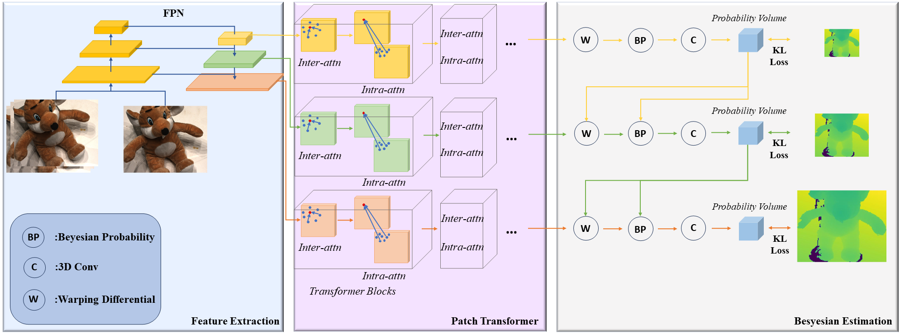
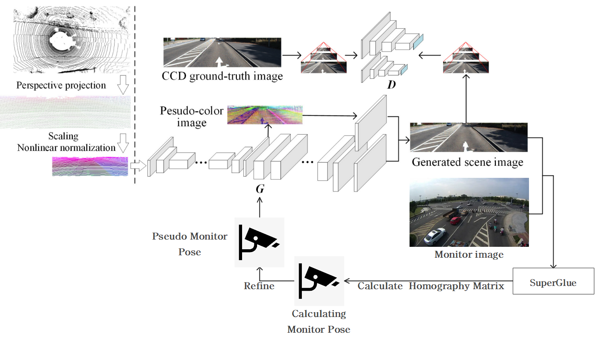

Hello!
My name is Zhanyuan Tian and I am a senior student at Wuhan University in Hubei, China.
My main research focuses on improving performance on computer vision tasks using network backbones and algorithms from other domains, like NLP(Natural Language Processing) and GNN(Graph Neural Network). I'm also interested in applications of AI in science, especially in chemistry, such as chiral drug design or modeling molecules interaction.
I'm currently working on three projects:
- Finetune my depth-prior-MVS network to make it perform better. It currently achieving a result of 0.339/0.274 (acc./comp.) metrics on DTU. The code will release soon!
- Reconfigure the output layers of Superpoint network into a U-Net architecture, enabling simultaneous multi-scale descriptor extraction and matching ground truth calculations for each point. Then improve the SuperGlue network's efficacy with a coarse-to-fine aggregating technique.
- Read Multi-model macthing paper to prepare for the next project.
I'm looking for MS/RA/Ph.D. positions right now. Feel free to contact me if you are interesed!👋
EMail: yztian@whu.edu.cn
Remote Sensing Department
Wuhan University
299 Bayi Road
Wuhan
China
Projects
|  |
Depth-prior-MVS: Utilizes Prior Depth Information to Guide Feature Aggregating and Depth Prediction in subsequent stages
Zhanyuan Tian, Jiaqi Jiang, Li Li, Jian Yao project page Restrict the fused region using prior depth information; Implementing Bayesian estimation to increase cost volume accuracy; Leveraging KL divergence to produce unambiguous depth probabilities and enable formulation as a convex optimization for better convergence. |
|  |
P2PRN: Pixel and Point Matching Strategy with Point Rendering Neural Network
Zhanyuan Tian, Haiping Wang, Chong Liu, Zhen Dong project page Utilized the backbone of MPR-GAN for 2D-feature generation and SuperGlue for 2D-feature matching to optimize point rendering perspective based on matches, completing multi-modal matching tasks after several iterations. |
|
|
SuperlightGLue: (Still working on it.) |
Awards
Sep 2023: I was awarded a national scholarship (top %0.5)!Sep 2022: I was awarded a NITORI Fellowship (1 in 347)!
Sep 2021: I was awarded a Haida Zhong Fellowship (6 in 347)!